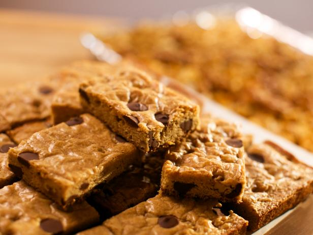

Blondies
Ingredients:
- 1 1/2 sticks of melted, cooled, un-salted butter
- 1 1/2 cups of all purpose flour
- 1/2 tablespoons of kosher salt
- 1 teaspoon of baking powder
- 1 1/2 cups of packed dark brown sugar
- 1 tablespoon of vanilla extract
- 2 eggs lightly beaten
- Flakey sea salt
- 1 cup + 2 tablespoons of bittersweet chocolate chips
- 1/2 cup of chopped walnuts(optional)
- 9x13 inch pan
Directions:
- Preheat oven to 350°F.
- Butter the 9x13in pan, line pan with parchement paper, then butter parchment.
- Whisk the flour, baking powder, and salt together in a medium bowl.
- In another bowl, whisk the melted butter and brown sugar together until combined.
- Add the vanilla and eggs till combined.
- Gentle mix flour mixture into wet ingredients, careful, do not overmix.
- Mix in 1 cup of chocolate chips and walnuts(optional).
- Pour batter into 9x13in pan and scatter remaining chocolate ontop of settled batter.
- Bake until top is golden brown, approximately 20-25 minutes.
- Let cool before removing from pan.
- Batch should yield 16 blondies.
Food Network